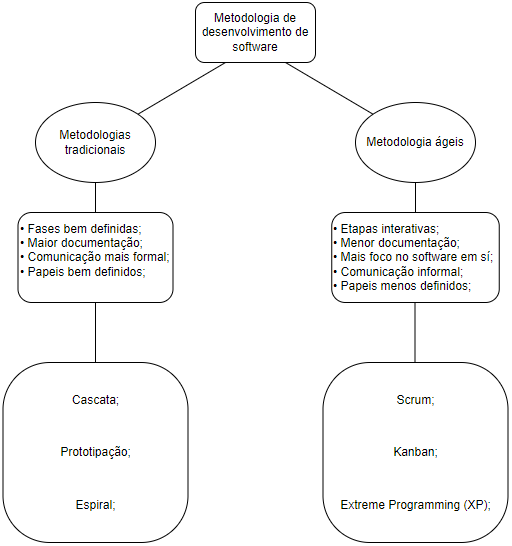

Metodologia Ágil ou Tradicional?
Qual usar em minha empresa?
Mapa Mental
As metodologias tradicionais se baseiam em etapas mais rígidas e controladas, enquanto as metodologias ágeis se fundamentam na flexibilidade e adaptabilidade das estratégias.
Na década de 90 tinha-se muita insatisfação na hora de criar um software, pois os projetos eram muito caros, ninguém queria usar e tinha-se funcionalidades demais que não eram necessárias. Não tinha conhecimento do que o cliente precisava e nem o cliente sabia o que o próprio precisava.
O ciclo de produção era contínuo, o modelo de cascata mais antigo se baseava muito na engenharia civil, mas não funcionava com os softwares. Mas não quer dizer que esse modelo de produção é ruim, muitas empresas usam o modelo de cascata por exemplo reformulado até hoje.
Implementação
Os 4 valores do manifesto ágil:
- Indivíduos e interações. Sempre depender de pessoas.
- Software em funcionamento. Mais software funcionando do que documentação.
- Colaboração com o cliente. Trabalhar mais a colaboração com o cliente do que contrato em sí, trabalhar junto com o cliente.
- Responder a mudanças, mais do que seguir o plano.
Muitas reuniões para conversar mudanças planejar é importante mais praticar o plano é essencial.
O método ágil vem não só para o mundo de engenharia de software mas para a empresa como um todo, todas as áreas da empresa.
Mas não e uma regra que vai funcionar em tudo.
mudar é perfeitamente possível, mas é necessário ser cuidadoso para que nenhum detalhe se perca no caminho.
Por isso, considere que qualquer transformação ágil deve ser 2 coisas:
- Abrangente: abraçar a estratégia, a estrutura, os processos, as pessoas e a tecnologia da empresa.
- Iterativa: ter a consciência que nem tudo pode ser antecipado, ou seja, imprevistos acontecem e a flexibilidade é a chave.
Para que a metodologia funcione a empresa tem que aderir a cultura, aplicar treinamentos e alguns requisitos:
- Valor: identificação de quais setores, produtos e fluxos de trabalho criam valor para o negócio; mapear processos que podem se beneficiar de maior dinamismo e agilidade dentro desses pontos.
- Estrutura: crie fluxos de valor, de maneira a dar um sentido mais organizacional nas entregas e no reporte de resultados.
- Times Ágeis: identificar os times e suas missões, buscando potencializar sua entrega de valor. Aqui, define-se também as ferramentas e frameworks ágeis.
- Backbone: identificação de melhorias e avanços necessários no que diz respeito à tecnologia ou equipe, com intuito de mudar a cultura organizacional e habilitar aplicação da metodologia ágil.
- Roadmap de implementação: ao chegar em conclusões para todos esses pontos, é hora de definir o roadmap de implementação.
Conclusão
Para a implementação de um ou de outro vai depender muito do tipo de projeto e cultura da empresa. A própria empresa pode preferir a metodologia tradicional, ainda mais se os envolvidos do projeto não estão acostumados a trabalhar com uma metodologia ágil, ainda que ela se aplique a aquele projeto. O ideal é estudar o projeto, conhecer os requisitos, tecnologias a serem utilizadas, tudo o que julgar necessário. E a partir disso tudo analisar se é melhor partir pela metodologia ágil ou a tradicional.